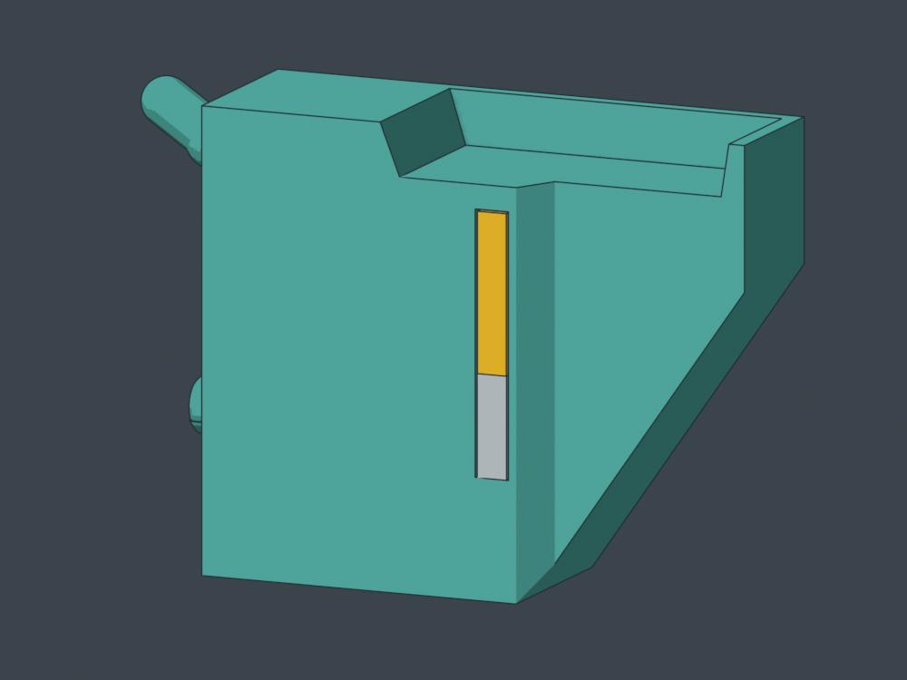
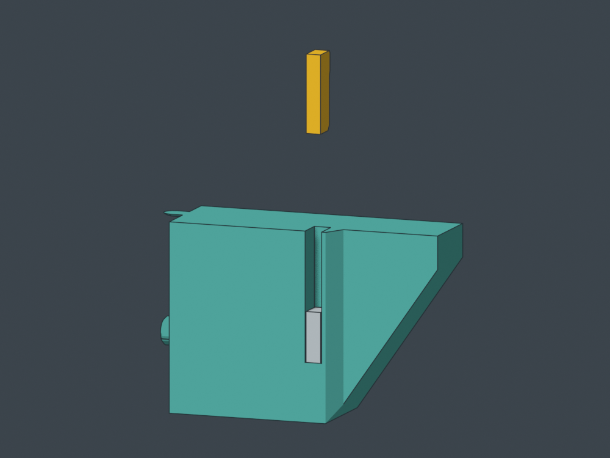
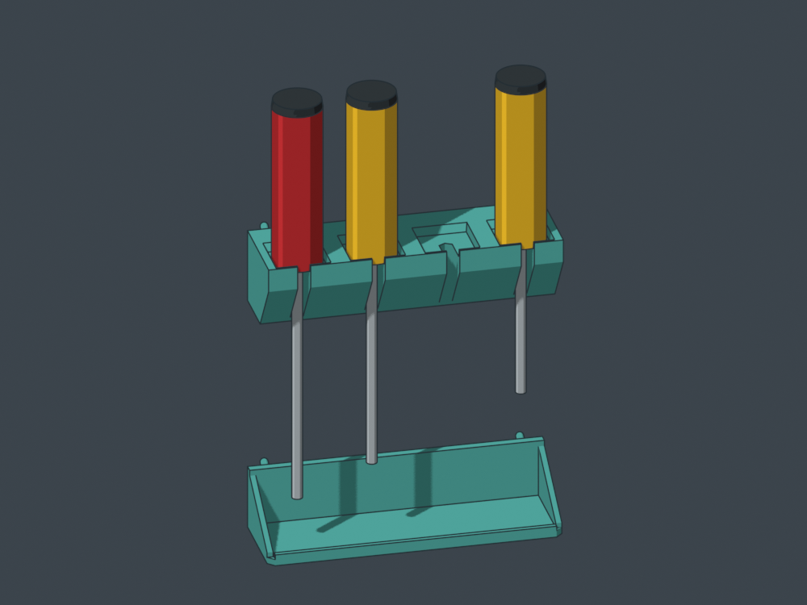
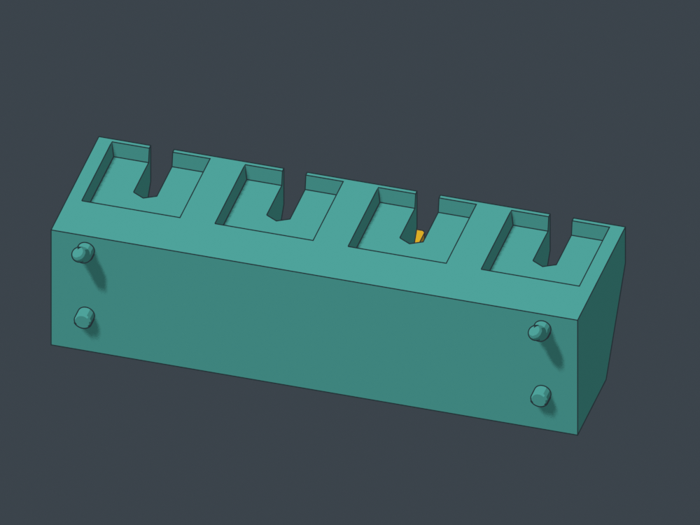

Four standard drivers · seven grid cells · 175.8 mm wide · current canonical tighter pegs.
Model review, not a ready-to-run print. Magnet size is provisional: four 10 × 10 × 3 mm block magnets, magnetized through the 3 mm thickness. Magnetic pull, plug grip and thermal suitability remain untested. A and B are preserved.
The flat seat carries the handle. A 120° V saddle locates the shaft below it; the magnet supplies gentle rearward preload. Lift approximately 6 mm to clear the shallow seat, then pull forward. Reverse that path to return. This geometric path is clear for the nominal 6.35 mm shaft / 30 mm flat-shouldered handle envelopes; actual shoulder shapes and magnetic release force still need a trial.




The V-apex skin is 0.8 mm; nominal shaft-to-magnet distance including cavity clearance and V geometry is approximately 1.49 mm. Magnet grade has not been selected. Test the chosen magnet and actual shafts before relying on this retention.
Rack in upright print orientation: STEP · STL
The separate floor protects the tool tips and is unchanged. Match its mounting height to actual tool lengths.
Reference tip floor: STEP · STL
Dimensions and geometric checks
Valid single-solid STEP reimports, closed STL boundaries with preserved internal voids, clear magnet/plug loading paths except intended plug-rib interference, and nominal tool lift/forward motion. The rack is one solid with four closed internal cavities. P1S bounds checked. Rear peg supports, layer behavior, pause timing, magnetic forces and physical fit are not qualified.
Current fit authority: reference/peg-fit.scad, SHA e586ab4ff6173c76e10c960ca707da94b01c615a629480d4bceeae71c80e2438. The generator rereads it each time; downloaded CAD is a frozen snapshot.